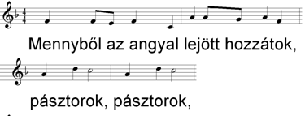

Kotta-editor
Mivel a Diatár program elsősorban a nép éneklésének, illetve kórus (gregorián szkólától vegyeskaron keresztül a dicsőítő koncertekig) munkájának támogatására készült, bizonyos esetekben célszerű lehet nem csak a szöveget, hanem magát az éneklendő kottát is kivetíteni. A programba épített kotta-szerkesztő és -megjelenítő modul viszonylag egyszerű, egyszólamú éneklés kottázását szolgálja, legyen az akár gregorián, népének vagy gitáros dal.
FIGYELEM! A kotta megjelenítését az első vetítés előtt engedélyezni kell a /KOTTA parancssori kapcsolóval, vagy a Beállítás "Vetítési üzemmód" részében.
Íme egy gregorián kotta Vadas Tamástól:
Karácsonyi népének (SzVU! 25/1) kezdete:

Taize-i alleluja eleje gitárakkordokkal:
A kotta elemei a szöveg közé épülnek be, a szöveg-szerkesztőben kis kottahangok jelképezik, a szöveggel együtt kivághatók, másolhatók, áthelyezhetők. Magának a kottának a szerkesztése azonban önmagában összetett feladat, ezért külön kotta-editor készült hozzá, mely a szövegszerkesztőből hívható be.
Ebben az editorban egy szövegsor jelenik meg, amely fölé a kottát elhelyezhetjük. A következőkben lássuk ennek módját! Tovább >>